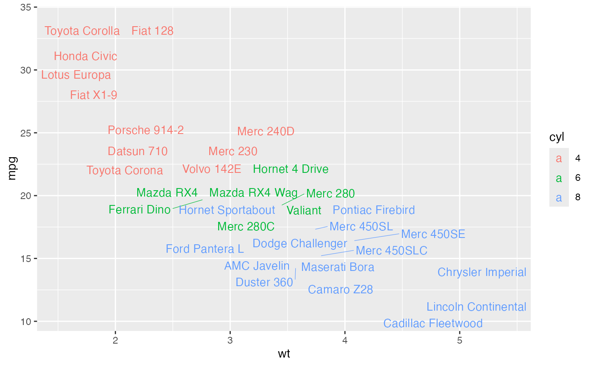
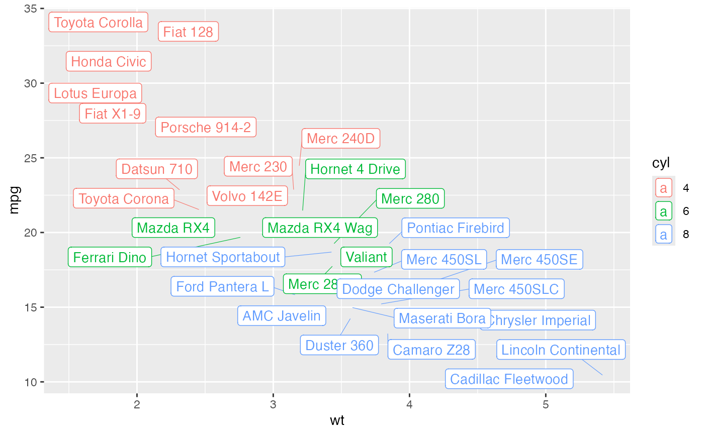

Add text to a plot.
Usage
ggtext(
data,
x = NULL,
y = NULL,
label = NULL,
color = "black",
palette = NULL,
size = 11,
face = "plain",
family = "",
show.legend = NA,
label.select = NULL,
repel = FALSE,
label.rectangle = FALSE,
parse = FALSE,
grouping.vars = NULL,
position = "identity",
ggp = NULL,
ggtheme = theme_pubr(),
...
)Arguments
- data
a data frame
- x, y
x and y variables for drawing.
- label
the name of the column containing point labels. Can be also a character vector with length = nrow(data).
- color
text font color.
- palette
the color palette to be used for coloring or filling by groups. Allowed values include "grey" for grey color palettes; brewer palettes e.g. "RdBu", "Blues", ...; or custom color palette e.g. c("blue", "red"); and scientific journal palettes from ggsci R package, e.g.: "npg", "aaas", "lancet", "jco", "ucscgb", "uchicago", "simpsons" and "rickandmorty".
- size
text font size.
- face
text font style. Allowed values are one of c("plain", "bold", "italic", "bold.italic").
- family
character vector specifying font family.
- show.legend
logical. Should text be included in the legends? NA, the default, includes if any aesthetics are mapped. FALSE never includes, and TRUE always includes.
- label.select
can be of two formats:
a character vector specifying some labels to show.
a list containing one or the combination of the following components:
top.upandtop.down: to display the labels of the top up/down points. For example,label.select = list(top.up = 10, top.down = 4).criteria: to filter, for example, by x and y variabes values, use this:label.select = list(criteria = "`y` > 2 & `y` < 5 & `x` %in% c('A', 'B')").
- repel
a logical value, whether to use ggrepel to avoid overplotting text labels or not.
- label.rectangle
logical value. If TRUE, add rectangle underneath the text, making it easier to read.
- parse
If
TRUE, the labels will be parsed into expressions and displayed as described in?plotmath.- grouping.vars
grouping variables to sort the data by, when the user wants to display the top n up/down labels.
- position
Position adjustment, either as a string, or the result of a call to a position adjustment function.
- ggp
a ggplot. If not NULL, points are added to an existing plot.
- ggtheme
function, ggplot2 theme name. Default value is theme_pubr(). Allowed values include ggplot2 official themes: theme_gray(), theme_bw(), theme_minimal(), theme_classic(), theme_void(), ....
- ...
other arguments to be passed to
ggpar.
Details
The plot can be easily customized using the function ggpar(). Read ?ggpar for changing:
main title and axis labels: main, xlab, ylab
axis limits: xlim, ylim (e.g.: ylim = c(0, 30))
axis scales: xscale, yscale (e.g.: yscale = "log2")
color palettes: palette = "Dark2" or palette = c("gray", "blue", "red")
legend title, labels and position: legend = "right"
Examples
# Load data
data("mtcars")
df <- mtcars
df$cyl <- as.factor(df$cyl)
df$name <- rownames(df)
head(df[, c("wt", "mpg", "cyl")], 3)
#> wt mpg cyl
#> Mazda RX4 2.620 21.0 6
#> Mazda RX4 Wag 2.875 21.0 6
#> Datsun 710 2.320 22.8 4
# Textual annotation
# +++++++++++++++++
ggtext(df, x = "wt", y = "mpg",
color = "cyl", palette = c("#00AFBB", "#E7B800", "#FC4E07"),
label = "name", repel = TRUE)

# Add rectangle around label
ggtext(df, x = "wt", y = "mpg",
color = "cyl", palette = c("#00AFBB", "#E7B800", "#FC4E07"),
label = "name", repel = TRUE, label.rectangle = TRUE)
